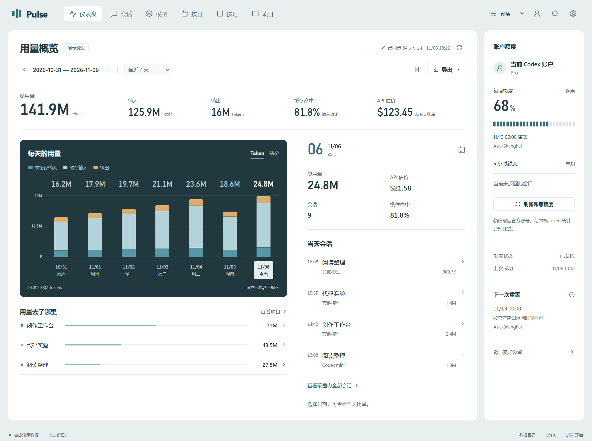
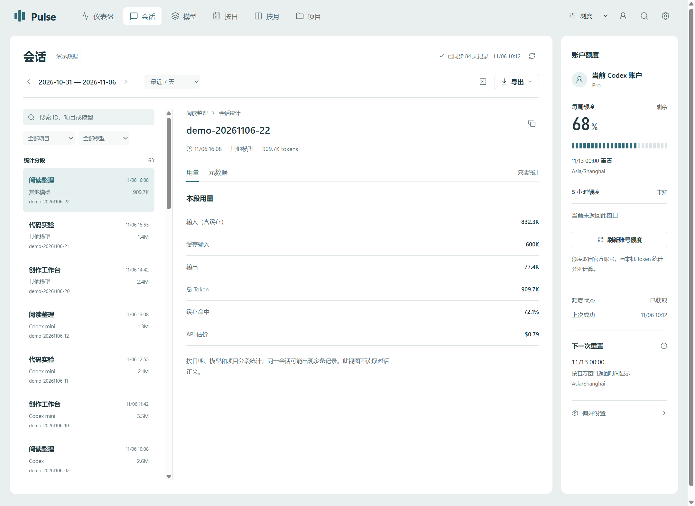
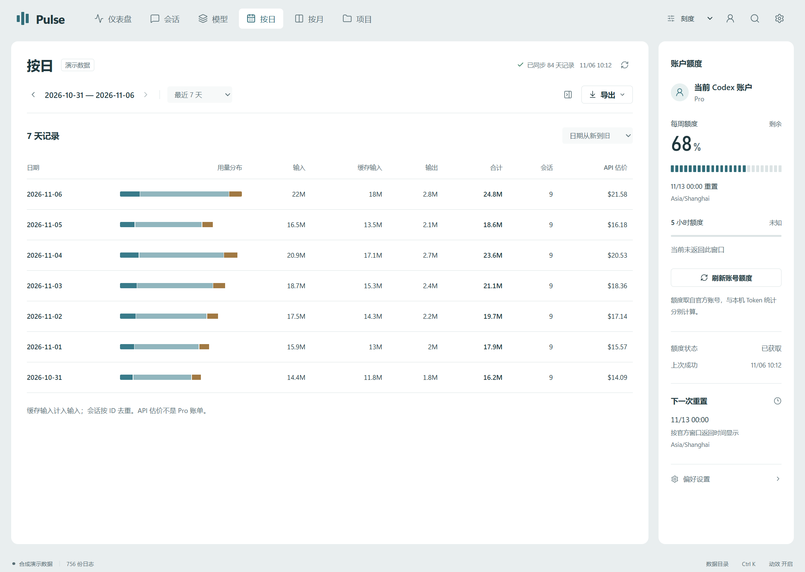
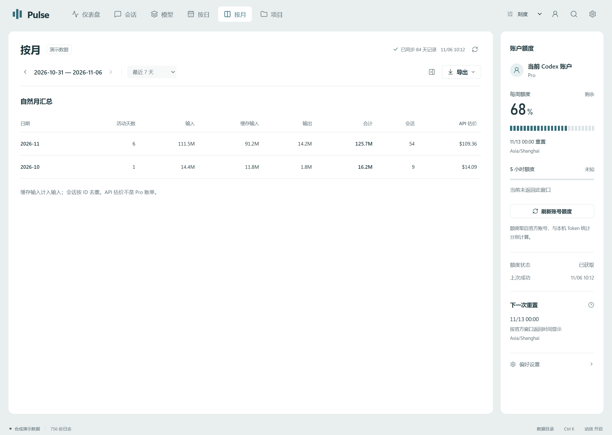
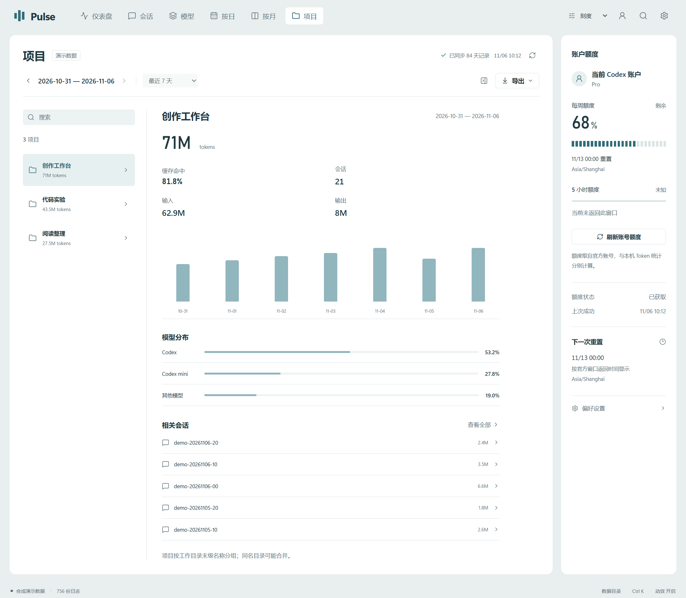
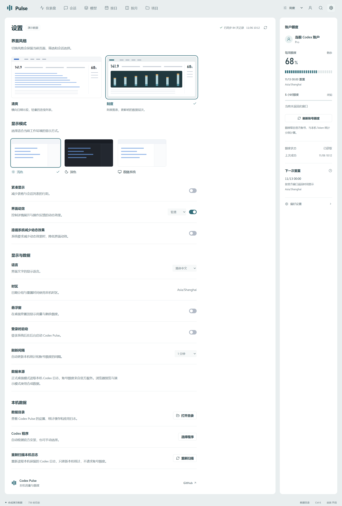

清爽与刻度
切换主题，保留页面、日期、筛选、搜索、排序与选择。

清爽 Clear
明亮的工作面与轻量层级，适合长时间阅读。

刻度 Meter
用更明确的图表对比和数字层级看清变化。
六个主视图
从整体趋势，看到模型、日期、项目和会话。

仪表盘 Dashboard
汇总本机活动，独立查看账号服务返回的剩余额度与重置时间。

会话 Sessions
搜索和筛选会话元数据，查看对应的模型、项目与 Token 分项。

模型 Models
比较模型用量、输入输出构成，以及可用时显示的 API 参考费用。

按日 Daily
按所选日期范围整理每日消耗，再定位具体一天的活动。

按月 Monthly
将本机记录按自然月归集，查看各月 Token 分项和变化。

项目 Projects
查看项目间的用量分布，继续检查相关会话。
偏好，各自独立。
主题、浅深模式与动效分别选择，不需要为了换一种外观重新设置工作状态。
- 清爽 / 刻度
- 浅色 / 深色 / 跟随系统
- 关闭 / 轻柔 / 完整动效
- 语言、悬浮窗、登录启动与刷新间隔

可尊重系统的减少动态效果偏好。